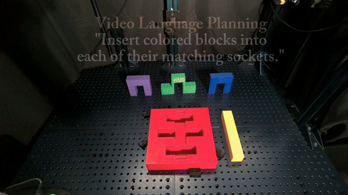
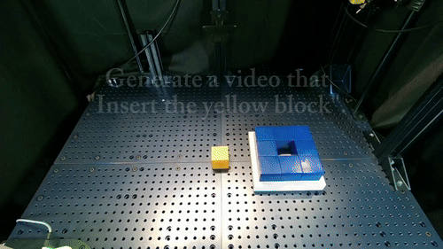
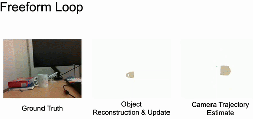
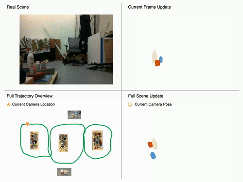
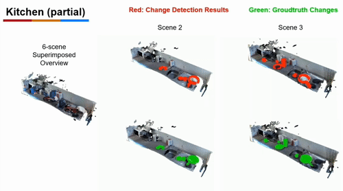
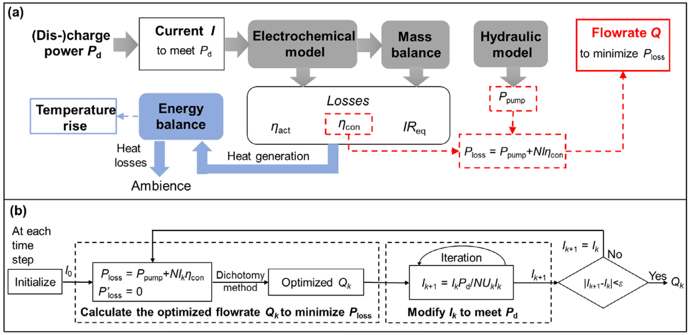
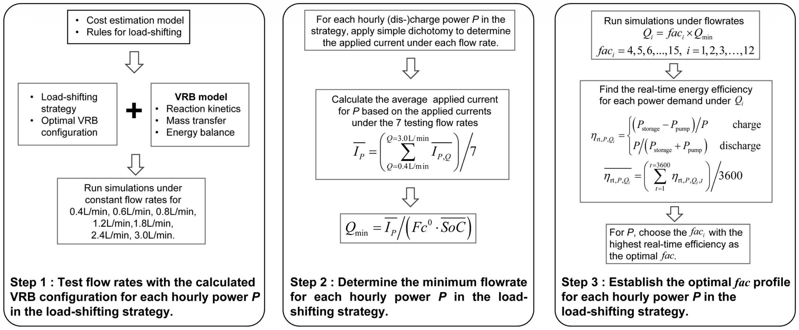
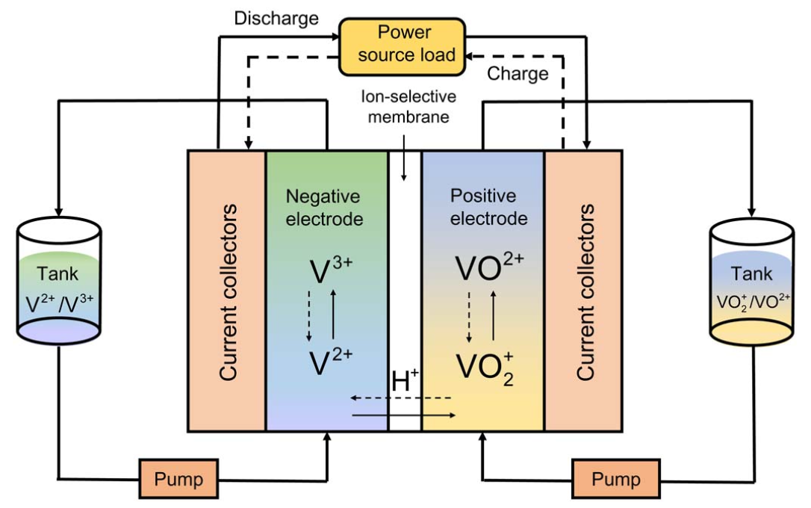

Jiahui FU 付佳慧
I am a Research Scientist at the Robotics and AI Institute (RAI) (formerly Boston Dynamics AI Institute). I received my Ph.D. from MIT CSAIL in 2023, advised by Prof. John Leonard. Prior to that, I obtained my M.S. from the University of Michigan in 2018, and my B.Eng. from Zhejiang University in 2017. I was a research intern at Meta Reality Labs, working with Yuichi Taguchi in 2021 and Shichao Yang in 2022.
My research focuses on building robots that see, predict, and act by linking deep spatial perception with autonomous manipulation. During my PhD, I developed object-centric 3D representations and neural implicit models for long-term SLAM, enabling robots to maintain persistent, object-aware understanding of changing environments. Recently, I have been leveraging this spatial foundation to treat video generative models as predictive world models for zero-shot robotic manipulation. By grounding high-level visual foresight into physical interaction, my current work develops frameworks that translate generative "commonsense" into robust, closed-loop robot execution.
Publications (* equal contribution)





During my undergrad, I also worked on battery control and smart grid optimization. Feel free to check them out!



Service
Reviewer
- International Journal of Robotics Research (IJRR)
- IEEE Robotics and Automation Letters (RA‑L)
- Robotics: Science and Systems (RSS)
- IEEE International Conference on Robotics and Automation (ICRA)
- IEEE/RSJ International Conference on Intelligent Robots and Systems (IROS)
- Conference on Robot Learning (CoRL)